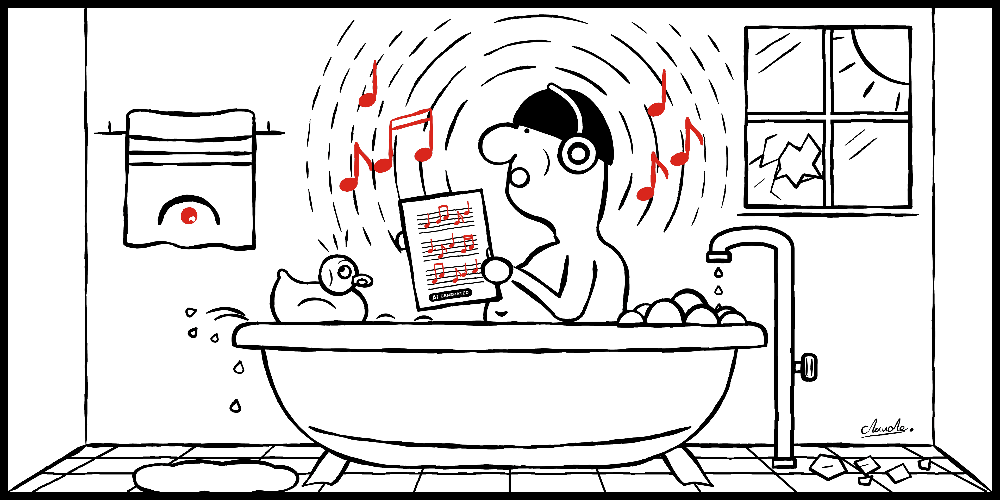
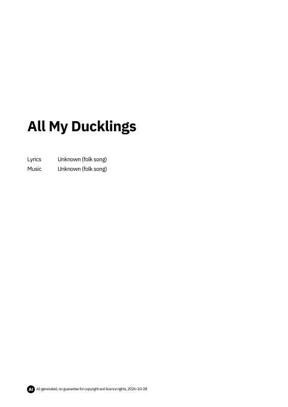
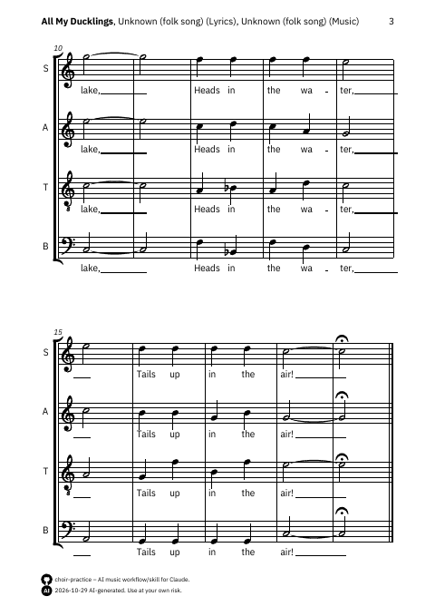
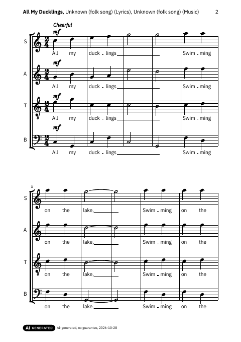

Listen, sing along, get it right.
choir-practice is a practical Claude skill that saves you a lot of time: your choir score becomes a checked ZIP in which every voice finds its own recordings to practise with, ready to share.
Install the skill See the example ZIP
4 stages per voice
2 sounds: choir and piano
75% tempo of the slow version
42 recordings in the example
01 WorkflowTwelve steps, two stops with questions for you. Click a step.
1 Call 2 Setup, Stop A 3 Attach score 4 Survey 5 Stop B 6 Transcription 7 Proofreading 8 Final engraving 9 Audio 10 Package 11 Closing 12 Download 02 PracticeEvery voice gets its own mix. Your own voice sits in the middle, the others are spread across the stereo image like the choir stands. Pick a voice, a stage, a sound and a tempo: the headphones show the distribution, and you hear exactly that mix. It sounds best on headphones. The recordings are mechanically exact, without interpretation.
Soprano Solo, choir sound Solo, choir sound, slow With accompaniment, choir sound With accompaniment, choir sound, slow In the choir, choir sound Solo, piano sound Solo, piano sound, slow With accompaniment, piano sound With accompaniment, piano sound, slow In the choir, piano sound Alto Solo, choir sound Solo, choir sound, slow With accompaniment, choir sound With accompaniment, choir sound, slow In the choir, choir sound Solo, piano sound Solo, piano sound, slow With accompaniment, piano sound With accompaniment, piano sound, slow In the choir, piano sound Tenor Solo, choir sound Solo, choir sound, slow With accompaniment, choir sound With accompaniment, choir sound, slow In the choir, choir sound Solo, piano sound Solo, piano sound, slow With accompaniment, piano sound With accompaniment, piano sound, slow In the choir, piano sound Bass Solo, choir sound Solo, choir sound, slow With accompaniment, choir sound With accompaniment, choir sound, slow In the choir, choir sound Solo, piano sound Solo, piano sound, slow With accompaniment, piano sound With accompaniment, piano sound, slow In the choir, piano sound Tutti, all voices Tutti, choir sound Tutti, piano sound
Voice Soprano Alto Tenor Bass
Stage Solo With accompaniment In the choir Tutti
03 Example ZIP



Contents
The ZIP holds four folders. The voice ZIPs in 2_Practice are ready to hand out, their contents are listed last. Click a folder.
1_Scores Score (PDF), MusicXML and MIDI. 1_Score_<Title>_Scan.pdf 2_Score_<Title>.pdf 3_MusicXML_<Title>_Choir.musicxml 4_MusicXML_<Title>_Piano.musicxml 5_MIDI_<Title>/ S_MIDI_<Title>/ (one per voice: S, A, T, B) 1 to 5_S_<Title>_Choir_and_Piano_*.mid (ten files) Tutti_MIDI_<Title>/ <Title>_Tutti_Choir.mid <Title>_Tutti_Piano.mid 2_Practice Overview, guide and one ready ZIP per voice. 1_Overview.pdf 2_Guide.pdf S_Practice_<Title>.zip A_Practice_<Title>.zip T_Practice_<Title>.zip B_Practice_<Title>.zip 3_Documentation README, check log, correction log and session handoff. 1_README_<Title>.md and .pdf 2_Check_Log_<Title>.md and .pdf 3_Correction_Log_<Title>.md and .pdf 4_Session_Handoff_<Title>.md 4_Tools Project data and the skill itself, for further work. 1_Project_Data_<Title>/ score.json docs.json layout.json mixes.json 2_SKILL_choir_practice_v<Version>/ choir_practice.skill README.md session_handoff.md S_Practice_<Title>.zip Contents of every voice ZIP (soprano shown): everything one voice needs. 1_S_Guide.pdf 2_S_Score_<Title>.pdf 3_S_Audio_Choir_Sound_<Title>/ 1 to 6_S_<Title>_Choir_*.mp3 (solo, with piano, each slow and normal; own voice louder; all voices equal) 4_S_Audio_Piano_Sound_<Title>/ 1 to 6_S_<Title>_Piano_*.mp3 (the same six) 04 Rights and AIRights Before scores are processed, the skill asks about the rights. It records the answer in the pack’s README. The licences of the score must be observed.
Labelling Everything the skill creates is labelled as AI content, both with the EU label for AI-generated content and in the text and metadata of the documents.
05 Get startedUpload choir-practice.skill in your Claude account (settings). Call the skill without a score and answer stop A (rights and intended use). Attach the score and answer stop B (work data). Download the ZIP at the end and pass the audio files on to the choir. Download the skill